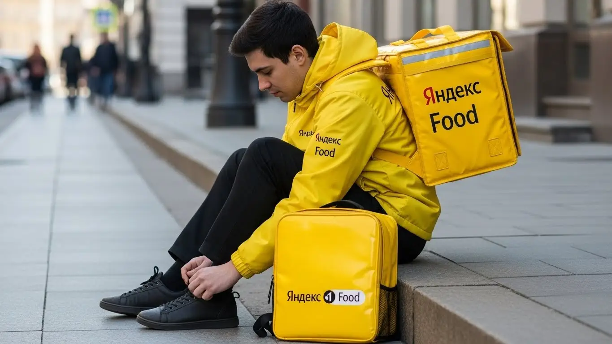

Работа курьером Яндекс Еды в Бердске в 2025-2026 году: доход и условия
- Работа курьером Яндекс Еды в Бердске: для кого эта вакансия и что вы получите
- Сколько вы будете зарабатывать курьером в Бердске: калькулятор дохода и разбор выплат
- Реальный заработок курьера в Бердске: смены и месячный доход
- График работы и форматы занятости
- Требования к кандидату и документы
- Самозанятость, налоги и юридическая чистота
- Пошаговое оформление и первый выход на линию в Бердске
- Пешком, на вело или на авто: что выгоднее в Бердске
- Районы, маршруты и «топовые» зоны заказов в Бердске
- Безопасность, страховка, штрафы и оплата простоя
- Плюсы и возможные минусы работы курьером в Бердске
- Реальные истории и отзывы курьеров из Бердска
- Ответы на главные вопросы о работе курьером Яндекс Еды в Бердске
- Короткие ответы на главные вопросы
- Заключение: твой старт в Бердске
Все города
Думаешь, работа курьером Яндекс Еда в Бердске — это просто врубил приложение, схватил термокороб и поехал зарабатывать? А как насчет вечной пробки на выезде из Микрорайона в час пик, когда заказ уже стынет? Или доставки в частный сектор за мостом, откуда потом полчаса выбираться без нового заказа? Давай честно: без понимания местной «кухни» можно быстро разочароваться, слить первый же доход на штрафы и убить подвеску машины на наших дорогах.
В интернете полно общих советов, но Бердск — не Новосибирск. Здесь свои правила игры: другой спрос, другие расстояния и свои «мертвые зоны», где можно прождать заказ часами. Большинство новичков здесь спотыкаются об одно и то же: не учитывают реальные расходы на бензин, не понимают, как работает приоритет в «низкий» сезон или выбирают для старта не тот район и катаются впустую. В итоге — вместо обещанных тысяч в кармане усталость и разочарование.
В этом гиде мы всё разложим по полочкам. Посчитаем, сколько чистыми приносит работа курьером в Бердске на машине, велосипеде и пешком, с учетом наших реалий. Я покажу на карте, в каких районах и в какое время самый «жир», а куда лучше не соваться. Разберём, как сибирская погода и праздники влияют на заработок, за что реально штрафуют и как этого избежать. И, конечно, сравним условия с другими доставками, которые есть у нас в городе. Если же вы ищете краткую сводку и форму для быстрой заявки, то вся информация про работу курьером Яндекс Еда в Бердске собрана на специальной странице.
Меня зовут Алексей. Я сам откатал не одну сотню заказов по Бердску, а сейчас у меня свой небольшой таксопарк-партнёр. Я видел всё: и дикие взлёты заработка, и глупые ошибки новичков, и то, как менялся сервис за эти годы. Так что никакой рекламной шелухи и обещаний золотых гор не будет. Только факты, личный опыт и рабочие советы для тех, кто хочет зарабатывать в нашем городе головой и ногами.
Чтобы ты не запутался во всех этих цифрах и условиях, я накидал короткий навигатор по статье.
Что ты точно узнаешь из этого разбора
В этой статье ты ТОЧНО узнаешь:
- Сколько реально можно заработать в Бердске за смену на машине, велосипеде и пешком, с учётом местных реалий?
- В каких районах Бердска (Микрорайон, Центр) и в какое время суток больше всего заказов и выше коэффициенты?
- Что выгоднее выбрать для Бердска — авто, велосипед или пешие прогулки, и как это напрямую влияет на месячный доход?
- За что на самом деле штрафуют и как не потерять рейтинг, чтобы тебе давали больше заказов?
- Как за 10 минут оформить самозанятость и почему это проще и безопаснее, чем работать неофициально?
- Какие фишки используют опытные курьеры, чтобы зарабатывать больше, работая в плохую погоду или в часы пик?
А если тебе некогда читать всю статью — переходи сразу к заключению, где ты найдёшь короткие ответы на все эти вопросы и указания, в каких разделах искать подробности.
А для начала — наглядная инфографика с основными цифрами по работе в Бердске.
Работа курьером в Бердске: главное в цифрах
Доход в час
350–500 ₽
В часы высокого спроса и с бонусами за заказы
Заработок за смену
до 3 800 ₽
За 8-10 часов работы, особенно в выходные дни
Чаевые от клиентов
15-20%
Заказов с чаевыми, которые полностью ваши
Гибкость графика
1-12 ч
Вы сами выбираете длительность и дни смен
Работа курьером Яндекс Еды в Бердске: для кого эта вакансия и что вы получите
Давай начистоту: работа курьером — это не для всех, но для многих в Бердске это может стать отличным решением. Это не просто «беготня с сумкой», а вполне нормальный способ заработать, если понимать, как всё устроено. Здесь не нужен диплом или солидный опыт работы, главное — твоё желание, ответственность и наличие смартфона.
Эта работа — конструктор. Ты сам решаешь, будет это лёгкая подработка на пару часов в день или полноценная занятость, приносящая основной доход. В Бердске, где не так много предложений с гибким графиком, это реальный шанс подстроить работу под свою жизнь, а не наоборот. Ты можешь совмещать доставки с учёбой, основной работой или просто использовать это как временный вариант, чтобы получать ежедневные выплаты.
Кому подойдёт эта работа в Бердске
По моему опыту, в курьеры идут самые разные люди, и у каждого своя причина. В Бердске эта работа идеально подходит нескольким категориям:
- Студентам. Учишься в Бердском политехническом колледже или ездишь на пары в Новосибирск? Можешь выходить на смены после занятий на 3–4 часа или работать полные дни на выходных. График легко подстроить под расписание лекций и сессий.
- Тем, кому нужен дополнительный доход или подработка. Если у тебя есть основная работа со сменным графиком или просто нужно закрыть кредит, доставка — отличный вариант. Вышел вечером, откатал несколько заказов, получил деньги на карту. Никаких обязательств на месяц вперёд.
- Людям без опыта работы. Это одна из немногих сфер, где можно стартовать с нуля. Тебя всему научат на коротком онлайн-инструктаже, покажут, как пользоваться приложением «Яндекс Про» для приёма заказов. Главное — быть вежливым и вовремя доставлять заказы.
- Водителям на своём авто (автокурьерам). Если у тебя есть машина, ты автоматически можешь зарабатывать больше. В Бердске это особенно актуально для доставки в отдалённые районы или в плохую погоду, когда пешим курьерам сложнее. Плюс, можно брать крупные заказы из супермаркетов.
- Тем, кто ценит свободу и быстрые деньги. Здесь нет начальника, который стоит над душой. Ты сам себе хозяин на смене. А главное — ежедневные выплаты. Заработал сегодня — получил сегодня. Это очень выручает, когда деньги нужны срочно.

Главные преимущества для жителей районов Микрорайон, Центр, Южный
Одно из главных удобств в работе курьером — возможность работать буквально в своём дворе. Тебе не нужно тратить час на дорогу до «офиса». Ты можешь выбрать слот в своём районе, выйти из дома и сразу начать получать заказы.
Например, если ты живёшь в Микрорайоне, то твоя зона — это плотная жилая застройка, куча магазинов и кафе. Заказов здесь всегда хватает, а расстояния небольшие. Живёшь в Центре, рядом с улицей Ленина? Отлично, тут сосредоточены основные рестораны и пиццерии, в обед и вечером всегда есть работа. Обитателям Южного микрорайона тоже не нужно ехать через весь город — можно спокойно работать в своей части Бердска, доставляя заказы из местных торговых точек. Это экономит и время, и деньги на проезд.
Краткое обещание по доходу и условиям
Если говорить о деньгах, то в Бердске цифры вполне реальные. При частичной занятости, работая по 3–4 часа в день, можно спокойно делать 1000–1500 рублей за смену. Если же рассматривать это как полную занятость, выходя на 8–10 часов, то пеший или велокурьер может зарабатывать до 45 000 – 50 000 рублей в месяц. Водители на авто, естественно, получают больше — их доход при полной загрузке может доходить и до 70 000 рублей.
Ключевые условия просты и прозрачны. Главное — это свободный график, который ты планируешь сам через приложение, и ежедневные выплаты на твою банковскую карту. Для старта не требуется никакого опыта. Основные требования — быть совершеннолетним, иметь смартфон на Android и готовность оформить самозанятость для получения выплат. Фирменный термокороб для заказов обычно предоставляют партнёры сервиса. Всё остальное — дело техники.
Вот живой пример. У меня есть знакомый парень, студент, живёт в центре Бердска. Он выходит на смены 4-5 раз в неделю после учёбы, примерно с 18:00 до 22:00. Работает пешком, берёт заказы из кафешек на улице Ленина и Островского. За вечер у него выходит в среднем 1200-1400 рублей. В месяц набегает около 25 000 рублей чистыми — на его нужды и развлечения хватает с головой, и учёбе не мешает.
В итоге, работа курьером в Бердске — это доступный и гибкий вариант заработка для широкого круга людей. Главные фишки — работа рядом с домом и быстрые деньги без сложных требований. Мой совет: если сомневаешься, попробуй начать с коротких смен в своём районе. Так ты быстро поймёшь, подходит ли тебе такой формат, и ничего не потеряешь.
Сколько вы будете зарабатывать курьером в Бердске: калькулятор дохода и разбор выплат
Самый главный вопрос, который волнует всех, кто ищет вакансии курьера: «Сколько я реально буду зарабатывать?». Давай разберёмся, из чего складывается твой доход в Яндекс Еде и как его можно спрогнозировать. Зарплата курьера — это не фиксированный оклад, а сумма нескольких составляющих. Чем лучше ты понимаешь эту механику, тем больше сможешь заработать.
Система абсолютно прозрачная. В приложении «Яндекс Про» ты видишь стоимость каждого заказа ещё до того, как его принять. Там же отслеживается вся статистика: сколько ты выполнил доставок, какое расстояние проехал, какие бонусы получил. Никаких «серых» схем, всё официально и понятно.

Из чего складывается доход курьера
Твой итоговый заработок за смену складывается из нескольких частей. Давай пройдёмся по каждой.
- Оплата за заказ. Это базовая стоимость за то, что ты забираешь и доставляешь заказ. Она зависит от способа доставки (автокурьеру платят больше) и сложности.
- Доплата за расстояние. Чем дальше нести или везти заказ, тем выше оплата. Система считает маршрут от точки А (ресторан/магазин) до точки Б (клиент) и начисляет доплату за каждый километр.
- Повышающие коэффициенты. Это самое интересное. В часы пик (обед, ужин), в плохую погоду (дождь, снег) или в определённых районах Бердска, где заказов больше, чем курьеров, на карте в «Яндекс Про» появляются зоны, подсвеченные фиолетовым. Работа в такой зоне умножает стоимость заказа на коэффициент (например, x1.5 или x2).
- Бонусы. Сервис часто предлагает персональные цели. Например, «выполни 15 заказов за 3 дня и получи бонус 1000 рублей». Это отличный способ дополнительно увеличить свой доход.
- Чаевые. Все чаевые, которые оставляют клиенты через приложение, полностью твои. Сервис не берёт с них никакой комиссии.
- Оплата простоя. Это важная гарантия. Если ты вышел на запланированный слот, а заказов временно нет, сервис всё равно начисляет минимальную оплату за твоё время на линии. Ты не останешься с нулём в кармане.
Как пользоваться калькулятором дохода
Чтобы не гадать на кофейной гуще, на сайте есть специальный калькулятор. Он помогает прикинуть твой потенциальный заработок в Бердске. Пользоваться им элементарно.
Сначала ты выбираешь свой город — Бердск. Затем указываешь, как планируешь доставлять: пешком, на велосипеде или на личном автомобиле. После этого двигаешь ползунки: сколько часов в день и сколько дней в неделю ты готов работать. Калькулятор на основе средних данных по городу моментально покажет тебе примерный доход за день и за месяц. Понятно, что это прогноз, но он даёт хорошее представление о том, на какие цифры можно ориентироваться.
Калькулятор дохода курьера в Бердске
Примерный доход в месяц:
64 000 ₽
Это примерный расчёт на основе средней ставки в 400 ₽/час. Реальный доход зависит от спроса, бонусов, погоды и вашего рейтинга.
Чтобы увидеть самые свежие условия и сразу подать заявку, загляни на страницу про работу курьером Яндекс Еда в твоём городе — там есть и калькулятор, и форма, и ответы на частые вопросы.
Примеры расчёта для пешего, вело- и авто‑курьера в Бердске
Давай посмотрим на конкретных примерах, сколько можно заработать в Бердске при разных сценариях.
- Пеший курьер. Представь, что ты работаешь 5 дней в неделю по 4 часа после обеда в центре. В основном доставляешь еду из кафе и небольшие посылки. В среднем за такую смену твой заработок составит 1000–1300 рублей. В месяц выйдет доход около 20 000 – 26 000 рублей. Идеально для подработки.
- Велокурьер. Ты работаешь на выходных по 8 часов, плюс пару раз в будни по 4 часа. На велосипеде ты быстрее, успеваешь делать больше заказов и покрываешь большие расстояния, например, между Микрорайоном и Южным. Твой дневной заработок в выходной может достигать 2500–3000 рублей. В месяц это может принести 35 000 – 45 000 рублей.
- Автокурьер. Ты работаешь на полную ставку, 5-6 дней в неделю по 8-10 часов. На машине тебе доступны самые выгодные заказы: доставка из гипермаркетов, дальние маршруты по всему Бердску и даже в ближайшие посёлки. В обычный день твой доход составит 3000–4000 рублей, а в дни с высоким спросом и коэффициентами — до 5000 рублей. В месяц можно стабильно зарабатывать 60 000 – 75 000 рублей.
Вот реальная история от моего товарища, который работает автокурьером в Бердске. Однажды зимой, в сильный снегопад, когда многие решили отсидеться дома, он вышел на линию. Весь город горел фиолетовым, коэффициенты были x2.5. Заказы сыпались один за другим — люди массово заказывали еду и продукты. За 8 часов работы он сделал почти 7000 рублей. Да, было непросто ездить по сугробам, но такой заработок за один день всё окупил. Он понял, что плохая погода — это не проблема, а возможность.
В общем, твой заработок напрямую зависит от тебя: от выбранного способа передвижения, количества часов на линии и умения ловить моменты с высоким спросом. Главный совет: изучи карту в «Яндекс Про», не бойся работать в пиковые часы и в непогоду. Именно тогда и делаются самые большие деньги.
Реальный заработок курьера в Бердске: смены и месячный доход
Давай сразу к главному — к деньгам. Забудь про рекламные обещания о заоблачных суммах. Я расскажу, какая реальная зарплата у курьера в Бердске и сколько можно положить в карман, работая в Яндекс Доставке. Твой заработок — не лотерея, а результат твоих действий: какой транспорт выбрал, в какое время вышел на линию и насколько хорошо знаешь город. Цифры, которые я приведу, — это средние показатели моих ребят и мой личный опыт.
Диапазон дохода для подработки и полной занятости
Если тебе нужна подработка на 2–4 часа в день, чтобы закрыть мелкие расходы или накопить на что-то, условия и цифры будут одни. Если же ты рассматриваешь доставку как основную работу на 8–10 часов, доход будет совсем другим. В Бердске расклад примерно такой.
Для подработки:
- Пеший курьер: За короткую смену в 3–4 часа можно сделать 600–1200 рублей. В месяц, при занятости 4–5 раз в неделю, набегает 12 000 – 25 000 рублей. Идеально для студентов после пар.
- Велокурьер: На велосипеде ты мобильнее, поэтому за ту же смену заработок уже 800–1500 рублей. В месяц это выливается в 18 000 – 35 000 рублей.
- Автокурьер: На машине за короткий слот можно заработать 1200–2000 рублей. За месяц подработки выходит 25 000 – 45 000 рублей до вычета расходов на бензин.
Для полной занятости:
- Пеший курьер: Полный рабочий день принесёт 1800–2700 рублей. В месяц это 40 000 – 60 000 рублей. Физически тяжело, но реально.
- Велокурьер: За 8–10 часов на велосипеде можно заработать 2500–4000 рублей. Месячный доход составит 55 000 – 80 000 рублей. Это, пожалуй, самый сбалансированный вариант по доходам и расходам.
- Автокурьер: На машине за полный день выходит 3500–6000 рублей. В месяц это 75 000 – 120 000 рублей «грязными». Отсюда нужно вычесть топливо, но даже с учётом этого доход самый высокий, особенно если брать дальние заказы.
Как район, время суток и погода влияют на доход
Твой заработок — величина непостоянная. Он сильно зависит от спроса, который меняется в течение дня и недели. Чтобы зарабатывать больше, нужно ловить моменты, когда заказов много, а курьеров мало. В Бердске это работает безотказно.
Главные факторы — это пиковые часы и погода. Самое «хлебное» время — обед с 12:00 до 14:00 и ужин с 18:00 до 21:00. В это время люди массово заказывают еду из ресторанов, и в приложении Яндекс Про появляются повышающие коэффициенты — зоны на карте окрашиваются в фиолетовый цвет, а стоимость каждого заказа умножается. Пятница вечер и все выходные — это один большой пик. А если в это время пошёл дождь или снег, считай, ты сорвал джекпот. Желающих работать в непогоду меньше, а заказов из дома — в разы больше. Коэффициенты взлетают, и клиенты чаще оставляют щедрые чаевые.
Районы тоже играют роль. В центре, в районе улиц Ленина и Первомайской, всегда много заказов из кафе. В спальных районах, вроде Микрорайона или Белокаменного, пик спроса приходится на вечер и выходные, когда люди заказывают ужин из Яндекс Еды или продукты на дом. Понимание этой карты спроса — ключ к стабильному доходу.
Советы по увеличению заработка от опытных курьеров
Просто выйти на линию и ждать заказов — стратегия так себе. Чтобы выжимать максимум из каждой смены, нужно подходить к делу с умом. Вот несколько проверенных советов, которые помогут увеличить доход без лишних переработок.
Во-первых, планируй свои выходы. Заранее бронируй в приложении плановые слоты на самое выгодное время — вечер пятницы, субботу и воскресенье. Такие слоты часто дают бонусы и приоритет в заказах. Во-вторых, не гоняйся за одним заказом с высоким коэффициентом через весь город. Лучше выбрать зону с плотной застройкой и большим количеством ресторанов, например, в центре, и выполнять много коротких заказов подряд. Это выгоднее по времени и силам.
В-третьих, используй подходящий транспорт. Если работаешь в центре Бердска, где небольшие расстояния, велосипед будет эффективнее машины. А вот для доставки в отдалённые районы или в плохую погоду автомобиль незаменим. Некоторые мои ребята комбинируют: днём катаются на велосипеде, а вечером, когда заказы идут на большие расстояния, пересаживаются на авто. И главное — будь вежлив и аккуратен. Доставляй заказы в целости, следи, чтобы в термокоробе ничего не пролилось. Хороший рейтинг и положительные отзывы от клиентов напрямую влияют на количество и качество заказов, которые тебе предлагает система.
Вот один из моих парней, студент, начал работать пешим курьером. За первые две недели заработал около 10 тысяч, выходя после учёбы на 3-4 часа. Уставал, а денег было не так много. Я посоветовал ему взять велосипед. В итоге за то же время он стал проезжать больше, выполнять заказы быстрее и его доход вырос почти вдвое. Сейчас его зарплата стабильно 25-30 тысяч в месяц, работая по 20 часов в неделю, и ему хватает на все свои нужды.
Сравнение дохода в Бердске: подработка vs полная занятость
| Тип курьера | Подработка (2-4 часа/день) | Полная занятость (8-10 часов/день) |
|---|---|---|
| Пеший курьер | 12 000 – 25 000 ₽/мес. | 40 000 – 60 000 ₽/мес. |
| Велокурьер | 18 000 – 35 000 ₽/мес. | 55 000 – 80 000 ₽/мес. |
| Автокурьер (до вычета топлива) | 25 000 – 45 000 ₽/мес. | 75 000 – 120 000 ₽/мес. |
В итоге, сколько зарабатывает курьер в Бердске, напрямую зависит от твоего подхода. Можно работать понемногу и иметь стабильную прибавку к стипендии или зарплате, а можно сделать это основной профессией и зарабатывать на уровне хорошего офисного специалиста. Главный совет: анализируй спрос, выбирай правильное время и место, и не бойся плохой погоды — именно она приносит самые большие деньги и щедрые чаевые.

График работы и форматы занятости
Одно из главных преимуществ работы курьером — это свободный график. Это не просто красивые слова, а реальный инструмент, который позволяет тебе самому решать, когда и сколько работать. Ты можешь совмещать доставку с учёбой, основной работой или личными делами. Никто не будет стоять над душой и требовать сидеть «от звонка до звонка».
Подработка после учёбы или основной работы
Формат подработки идеально подходит тем, у кого уже есть основное занятие. Гибкость графика позволяет встроить смены в любое расписание. Вот пара реальных примеров, как это работает в Бердске.
Пример первый: студент местного колледжа. Учёба у него заканчивается в три часа дня. Он приходит домой, обедает и с 17:00 до 21:00 выходит на смену на велосипеде. Работает четыре-пять вечеров в неделю, плюс один полный день в выходной. Этого хватает, чтобы стабильно зарабатывать 20-25 тысяч в месяц, не запуская учёбу. Деньги идут на развлечения, одежду и помощь родителям. А благодаря ежедневным выплатам не нужно ждать конца месяца.
Пример второй: мужчина, работающий на заводе по графику 5/2. Ему нужны дополнительные деньги на погашение кредита. Он выходит на линию на своей машине в пятницу вечером после работы и катается 4-5 часов. Также он берёт полную 10-часовую смену в субботу. За такие выходные он дополнительно зарабатывает 25-30 тысяч в месяц, что серьёзно помогает семейному бюджету. Он выбирает дальние заказы, которые выгоднее выполнять на авто.
Полная занятость: как выглядит типичный день курьера
Если ты решил сделать доставку своей основной работой, твой день будет строиться вокруг пиков спроса. Типичный распорядок дня курьера на полной занятости в Бердске выглядит примерно так.
День начинается не рано, около 10-11 утра. Курьер открывает Яндекс Про, смотрит на карту спроса и выбирает зону для старта — обычно это центр города или густонаселённый спальный район. Первый пик — обеденный, с 12:00 до 14:00. В это время заказы идут один за другим, времени на передышку почти нет. После двух часов дня наступает затишье, которое длится до вечера. Это время можно использовать для обеда, отдыха или выполнения заказов из Яндекс Доставки или магазинов, которые не так привязаны ко времени.
Второй, самый мощный пик, начинается около 18:00 и продолжается до 21:00-22:00. Это время ужинов, самых высоких коэффициентов и щедрых чаевых. После девяти вечера спрос постепенно спадает, и к десяти-одиннадцати можно заканчивать смену, проверив в приложении свой дневной заработок и убедившись, что выплаты уже в пути на карту. Такой рваный ритм позволяет и хорошо заработать, и найти время на личные дела в течение дня.
Как планировать слоты и выходы через приложение «Яндекс Про»
Яндекс Про — твой главный рабочий инструмент. Именно через него ты получаешь заказы, строишь маршруты и планируешь свой график. Грамотное использование приложения напрямую влияет на твой доход.
Основной способ планирования — это плановые слоты. Это заранее зарезервированные отрезки времени (например, с 18:00 до 22:00) в определённой зоне города. Расписание слотов на неделю вперёд обычно открывается в приложении в определённый день, и опытные курьеры стараются сразу забронировать самые выгодные — вечерние и выходные. Работа на плановом слоте часто даёт приоритет при распределении заказов и иногда гарантирует минимальный доход, даже если заказов было мало.
Крайне важно начинать плановый слот вовремя. Опоздание даже на несколько минут может негативно сказаться на твоём рейтинге активности. Система это фиксирует автоматически. Стабильно высокий рейтинг — это залог того, что тебе будут предлагать больше заказов, в том числе и самых выгодных. Поэтому дисциплина здесь — не пустое слово, а прямой путь к стабильному заработку.
Мой знакомый, работая на авто, поначалу игнорировал плановые слоты и выходил на линию, когда вздумается. В итоге часто попадал в часы затишья и жаловался на низкий доход. После того как я показал ему, как это работает, он начал заранее бронировать вечерние слоты в спальных районах. Его средний заработок за час вырос почти на 30%, потому что он перестал тратить время на ожидание и начал работать именно тогда, когда это было нужнее всего.
В итоге, свободный график — это не анархия, а инструмент, которым нужно уметь пользоваться. Планируй смены через Яндекс Про, выходи на линию в пиковые часы и будь пунктуален. Такой подход позволит тебе совмещать доставку с чем угодно и при этом иметь стабильный заработок.
Требования к кандидату и документы
Многих новичков пугает этап оформления: кажется, что потребуют кипу бумаг, диплом или какой-то особенный опыт. На деле всё гораздо проще. Чтобы начать работу курьером в Яндекс Еде, не нужно проходить многоэтапные собеседования или иметь специальное образование. Основные требования касаются базовых вещей, которые есть у большинства людей. Давай разберёмся по порядку, что именно тебе понадобится.
Возраст, гражданство и базовые условия
Начнём с главного — с формальных требований. Чтобы работать курьером в Яндекс Еде, тебе должно быть полных 18 лет. Это строгое правило, связанное с материальной ответственностью за заказы и денежные средства. Никаких исключений, даже с согласия родителей, здесь нет. По гражданству тоже всё чётко: принимают граждан России и стран Евразийского экономического союза (ЕАЭС), куда входят Беларусь, Казахстан, Армения и Киргизия.
Что касается физической формы, от тебя не требуют олимпийских рекордов. Если ты пеший курьер, важна выносливость, чтобы проходить за смену несколько километров с сумкой за плечами. Для велокурьера главное — уверенно держаться в седле и не бояться проехать 10–20 км за несколько часов. Водителю-курьеру физическая нагрузка даётся проще, но нужна внимательность и хорошая реакция на дороге. В Бердске, где расстояния не такие гигантские, как в мегаполисе, даже пеший формат вполне комфортен и подходит как основная работа или подработка.

Какие документы нужны для работы курьером
Список документов для трудоустройства минимальный, и собрать его можно за один вечер. Тебе не придётся бегать по инстанциям и стоять в очередях. Вот что нужно подготовить заранее, чтобы оформление прошло максимально быстро:
- Паспорт. Нужен для подтверждения твоей личности и возраста. Подойдёт паспорт РФ или страны ЕАЭС.
- ИНН (Идентификационный номер налогоплательщика). Этот номер необходим для регистрации в качестве самозанятого. Если ты не помнишь свой ИНН, его легко найти на сайте ФНС или Госуслуг за пару минут.
- Банковская карта. Подойдёт карта любого российского банка (Сбер, Тинькофф, Альфа и т.д.), оформленная именно на твоё имя. Именно на неё сервис будет перечислять ежедневные выплаты за заказы.
Иногда может потребоваться медицинская книжка. Как правило, она нужна для работы с заказами из ресторанов, где еда не упакована герметично. Для доставки запечатанных продуктов из магазинов она обычно не требуется. Условия могут меняться, поэтому актуальную информацию лучше уточнить в процессе регистрации. Если медкнижка понадобится, её оформление занимает несколько дней и не является большой проблемой.
Можно ли работать с 16 лет и какие есть альтернативы
Давай сразу по-честному: в Яндекс Еду, как и в большинство крупных сервисов доставки, берут строго с 18 лет. Это не прихоть компании, а требование законодательства, связанное с полной дееспособностью и материальной ответственностью. Поэтому, если тебе 16 или 17, устроиться курьером в Яндекс, к сожалению, не получится.
Какие есть варианты для подростков в Бердске? Можно поискать подработку в небольших местных компаниях, которые нанимают промоутеров для раздачи листовок. Иногда кафе или магазины ищут помощников на летний период. Также стоит посмотреть объявления на локальных сайтах или в городских пабликах. Это, конечно, не такая технологичная работа с гибким графиком, как в Яндексе, но как вариант для первого заработка рассмотреть можно.
Был у меня в парке студент из Бердска, 20 лет. Переживал, что для трудоустройства понадобится кипа бумаг. На деле всё, что понадобилось — паспорт, ИНН и реквизиты его карты. Медкнижку он сделал уже в процессе, за пару дней, она понадобилась для работы с несколькими ресторанами в центре города. Весь процесс от заполнения анкеты до первого заказа занял у него меньше суток. Он был искренне удивлён, насколько всё просто и без лишней бюрократии.
В общем, пакет документов для старта минимальный, а главное требование — совершеннолетие. Не нужно бояться бумажной волокиты, её здесь практически нет. Мой главный совет: заранее проверь, что твой ИНН есть под рукой и что банковская карта оформлена на тебя — это сэкономит время и ускорит процесс регистрации.
Самозанятость, налоги и юридическая чистота
Многих отпугивают слова «самозанятость» и «налоги». Кажется, что это что-то сложное, связанное с отчётами, декларациями и походами в налоговую. На самом деле, это современный и очень простой способ работать легально, который идеально подходит для курьеров. Давай разберём, почему это не страшно, а наоборот — выгодно и удобно.
Почему курьеры Яндекс Еды работают как самозанятые
Работа курьером в Яндекс Еде — это не трудоустройство по ТК в классическом понимании, а партнёрство. Через приложение Яндекс Про сервис даёт тебе доступ к платформе с заказами, а ты их выполняешь и получаешь за это деньги. Формат самозанятости (официально он называется «Налог на профессиональный доход» или НПД) как раз и создан для такого вида сотрудничества. Это твой официальный статус, который подтверждает, что ты работаешь на себя.
Главные плюсы такого формата очевидны. Во-первых, это официальный доход. Ты можешь без проблем взять кредит в банке или получить визу, предоставив справку о доходах из приложения «Мой налог». Во-вторых, это абсолютная простота: никакой бухгалтерии, кассовых аппаратов и сложных отчётов. В-третьих, это легальность. Ты работаешь «в белую», платишь небольшой налог и спишь спокойно, зная, что к тебе нет никаких претензий со стороны государства.
Как за 10 минут оформить самозанятость через «Мой налог»
Процесс регистрации настолько прост, что занимает меньше времени, чем заварить чай. Тебе не нужно никуда идти — всё делается онлайн через смартфон. Вот пошаговая инструкция:
- Скачай на телефон официальное приложение ФНС «Мой налог» (доступно в Google Play и App Store).
- Открой приложение и выбери самый простой способ регистрации — по паспорту РФ.
- Наведи камеру на главный разворот паспорта. Приложение само распознает все данные.
- Сделай селфи прямо в приложении. Это нужно для подтверждения личности, чтобы никто не зарегистрировался от твоего имени.
- Подтверди номер телефона и выбери свой регион работы — Новосибирская область.
Вот и всё. Через несколько минут тебе придёт уведомление, что ты официально зарегистрирован как самозанятый. Весь процесс действительно занимает 5–10 минут. Кстати, приложение Яндекс Про, через которое ты будешь получать заказы, само подскажет, как это сделать, и проведёт тебя по всем шагам.
Сколько и как платить налоги
Ставка налога для самозанятых — одна из самых низких в стране. Когда ты получаешь доход от юридического лица, такого как Яндекс Еда, ты платишь всего 6% от своего заработка. Никаких других скрытых сборов или отчислений нет. Это гораздо выгоднее, чем 13% НДФЛ при работе по трудовому договору.
Самое удобное, что тебе не нужно ничего считать вручную. Приложение «Яндекс Про» автоматически формирует чеки за твои услуги и передаёт данные о доходе в налоговую. Тебе остаётся только раз в месяц, до 12-го числа, зайти в приложение «Мой налог». Там уже будет сформирована квитанция с итоговой суммой налога за предыдущий месяц. Оплатить её можно прямо в приложении с любой банковской карты до 28-го числа. Это проще, чем платить за коммуналку.
Работать официально через самозанятость намного безопаснее, чем получать «серый» кэш. Ты всегда защищён, твой доход прозрачен, и ты можешь быть уверен, что получишь все заработанные деньги до копейки.
Помню, как один из моих водителей, мужчина лет 35, долго сомневался насчёт самозанятости. Боялся налогов, думал, это сложно и муторно. Мы сели с ним и вместе скачали «Мой налог». Зарегистрировались за 7 минут, пока пили кофе. Когда в следующем месяце ему пришёл налог — около 2500 рублей с его подработки — он сам удивился. Говорит: «И это всё? Я думал, там декларации, отчёты, очереди». Теперь он спокойно работает, зная, что всё легально, и даже справку о доходах для банка недавно без проблем получил.
Самозанятость — это не проблема, а удобный инструмент, который делает твою работу официальной и простой. Регистрация занимает минуты, налоги считаются автоматически, а ставка — всего 6%. Мой совет: не ищи обходных путей, оформляй всё как положено. Это сэкономит тебе нервы и даст уверенность в завтрашнем дне.
Пошаговое оформление и первый выход на линию в Бердске
Многих новичков, которые ищут подработку или основной доход, пугает процесс оформления. Кажется, что это долго, сложно и нужно куда-то ездить с бумажками. На деле условия работы в Яндекс Еде и Доставке продуманы так, чтобы ты мог стать курьером и получить первые деньги максимально быстро, часто — в тот же день. Весь процесс построен онлайн, опыт не требуется, а от тебя нужна только внимательность и 15–20 минут свободного времени.
Шаг 1–2: анкета и онлайн‑обучение
Всё начинается с простой анкеты на сайте. Никаких сочинений на тему «почему я хочу работать курьером». Указываешь базовые данные: ФИО, номер телефона, город — Бердск. Это занимает от силы пять минут. После этого система проверяет твои данные, обычно это происходит автоматически и быстро.
Как только анкета одобрена, тебе открывается доступ к короткому онлайн-обучению. Не пугайся, это не лекции в университете. Тебе покажут несколько коротких видеороликов о том, как пользоваться приложением «Яндекс Про», как правильно общаться с клиентами и представителями ресторанов, и что делать в нестандартных ситуациях. После каждого блока — небольшой тест из нескольких вопросов, чтобы убедиться, что ты всё понял. Главное — усвоить требования и стандарты сервиса, это основа успешной работы.
Шаг 3: получение сумки и доступа к заказам в Бердске
После успешного прохождения тестов остаётся последний шаг — получить фирменную экипировку, в первую очередь термокороб или термосумку. Без неё система не даст тебе доступ к заказам из ресторанов и магазинов, особенно если это доставка из Яндекс Еды. В Бердске экипировку можно получить через официальных партнёров сервиса.
Точные адреса и время работы таких пунктов всегда можно посмотреть прямо в приложении «Яндекс Про» после обучения. Приходишь, забираешь сумку, её регистрируют в системе, и с этого момента ты — полноценный курьер, готовый принимать заказы. Иногда есть опция доставки экипировки на дом, что ещё удобнее.
Шаг 4: первый слот и первый доход
Как только у тебя на руках термокороб и твой профиль в «Яндекс Про» полностью активен, можно планировать первую смену. Благодаря свободному графику ты сам решаешь, когда работать. Открываешь приложение, выбираешь на карте Бердска удобный район и временной слот. Мой совет: на первый раз выбери свой район, где ты знаешь каждый двор и подъезд. Это снимет лишний стресс.
Выбрав слот, ты выходишь на линию, и приложение начинает предлагать заказы. Выполняешь первый, второй, третий… А уже после окончания смены видишь на балансе свой первый заработок. Одно из главных преимуществ — ежедневные выплаты: эти средства можно вывести на карту практически сразу. Ощущение, когда утром только заполнил анкету, а вечером уже держишь в руках заработанное, — очень мотивирует.
Мой знакомый студент из Бердска искал подработку. В 10 утра он заполнил анкету, пока пил кофе. К обеду посмотрел все обучающие ролики и сдал тесты. После пар заехал в офис партнёра Яндекс Еды на улице Ленина, забрал термокороб. Вечером того же дня он выбрал 4-часовой слот в своём Микрорайоне, выполнил 6 заказов и его доход составил 1100 рублей. Всё за один день, без лишней бюрократии.
Процесс регистрации и старта работы курьером в Бердске максимально упрощён и занимает от нескольких часов до одного дня. Четыре шага — анкета, обучение, получение термосумки, выбор слота — и ты уже зарабатываешь. Главный совет: не затягивай с оформлением самозанятости. Статус самозанятого — это обязательное условие для выплат и официальной работы.
Пешком, на вело или на авто: что выгоднее в Бердске
Выбор транспорта — ключевой момент, который напрямую влияет на твой доход и условия работы. В Бердске, городе не очень большом, но вытянутом, у каждого способа доставки есть свои плюсы и «зоны эффективности». Неправильный выбор может привести к тому, что ты будешь уставать больше, а зарплата окажется меньше. Поэтому давай разберёмся, что и где выгоднее.

Пеший курьер: для центра и плотной застройки в Бердске
Пеший курьер — самый доступный вариант для старта, не требующий никаких вложений. Такой формат работы идеален для центра Бердска, где много кафе и ресторанов Яндекс Еды, а адреса доставки находятся в радиусе 1–2 километров. Например, в кварталах вокруг улиц Ленина, Первомайской и Комсомольской, где плотная застройка и много заказов на короткие дистанции.
Ты не зависишь от пробок, не ищешь парковку и можешь срезать путь через дворы. Это отличный вариант для студентов, ищущих подработку, или тех, кто хочет совмещать работу с прогулкой. Однако нужно понимать, что твой радиус ограничен, и на дальние заказы система тебя просто не назначит. Заработок будет стабильным, но, скорее всего, ниже, чем у курьеров на транспорте.
Велокурьер: быстрые доставки между спальными районами
Курьер на велосипеде (или велокурьер) — это золотая середина для Бердска. Он даёт скорость, манёвренность и позволяет работать на более длинных дистанциях, чем пешком. Ты всё так же не зависишь от пробок, но можешь легко покрывать расстояния в 3–5 км, что идеально для доставки между спальными районами. Например, маршруты между Микрорайоном, Южным и центром города — это стихия велокурьера.
Кроме того, это отличный способ поддерживать себя в форме — по сути, оплачиваемый фитнес. Главные плюсы и минусы: зависимость от погоды (в дождь или снегопад работать тяжело) и необходимость хорошей физической подготовки. Но если ты активен и любишь крутить педали, доход будет заметно выше, чем у пешего курьера.
Водитель-курьер: заказы по всему городу и пригороду Искитима и посёлка Агролес
Курьер на автомобиле открывает максимальные возможности для заработка. Работая на своем авто, ты можешь брать самые дорогие, дальние заказы, доставлять крупные посылки и работать в любую погоду с комфортом. Для водителя-курьера открыт весь Бердск, включая отдалённые районы, а также пригородные направления, например, в сторону Искитима или посёлка Агролес.
Особенно выгодно работать на авто в часы пик и в плохую погоду (дождь, мороз, снегопад). В это время количество заказов резко растёт, включаются повышенные коэффициенты, а пеших и велокурьеров на линии становится меньше. Конечно, есть расходы на бензин и обслуживание машины, но при грамотном подходе они с лихвой окупаются высоким доходом.
Сравнение форматов доставки в Бердске
| Параметр | Пеший курьер | Велокурьер | Водитель-курьер |
|---|---|---|---|
| Потенциальный доход | Базовый | Средний | Высокий |
| Расходы | Нет (только удобная обувь) | Минимальные (обслуживание велосипеда) | Существенные (бензин, амортизация) |
| Лучшие зоны в Бердске | Центр (ул. Ленина, Первомайская) | Спальные районы (Микрорайон, Южный) | Весь город и пригород (Искитим) |
| Главный плюс | Простота и отсутствие затрат | Скорость и «оплачиваемый фитнес» | Комфорт, дальность и высокий доход |
| Главный минус | Малый радиус и скорость | Зависимость от погоды и физ. формы | Расходы на топливо и обслуживание авто |
У меня в парке есть водитель-курьер, который раньше работал велокурьером. Летом в Бердске у него всё шло отлично, он получал хороший доход на доставках между районами. Но с приходом осени, дождей и холодов количество смен пришлось сократить. Он пересел на свое авто («девятку») и начал брать слоты в плохую погоду и вечерние часы. В итоге его месячный заработок вырос почти вдвое, даже с учётом расходов на бензин, потому что он забирал все «сливки» — дорогие заказы, от которых отказывались другие.
В Бердске есть работа для каждого типа курьера. Пеший — для старта и центра, велосипед — для скорости в спальниках, авто — для максимального заработка по всему городу и в любую погоду. Мой совет: трезво оцени свои возможности. Если у тебя есть машина, используй её — это самый верный путь к высокому доходу. Если нет — велосипед будет оптимальным выбором для большинства районов города.
Районы, маршруты и «топовые» зоны заказов в Бердске
Чтобы стабильно зарабатывать в Яндекс Еде, мало просто крутить педали или руль. Нужно понимать, где и когда концентрируются заказы. Бердск — город компактный, но и у него есть свои «рыбные» места и часы пик. Знание карты города и привычек его жителей — твой главный инструмент для увеличения заработка.
Где больше всего заказов: ТРЦ, бизнес‑центры и туристические места
Самый жирный кусок пирога, как правило, находится в центре. В Бердске это зоны вокруг крупных торговых центров — ТЦ «Астор» и ТЦ «Вега». Здесь сосредоточены фуд-корты, рестораны и магазины, которые генерируют постоянный поток заказов на доставку еды, особенно в обеденное время (с 12:00 до 15:00) и по вечерам. В этих зонах часто действуют повышающие коэффициенты, особенно в плохую погоду или праздники.
Ещё одна горячая точка — центральная часть города, особенно улица Ленина и прилегающие к ней кварталы. Здесь много офисов, и в будни днём курьеров ждут заказы на бизнес-ланчи. Летом добавляется туристический спрос: люди заказывают еду в парк или на пляжи у Бердского залива. Такая работа курьером выгодна, но и конкуренция выше, поэтому нужно быть быстрым и хорошо ориентироваться.
Работа в своём районе: примеры для популярных жилых кварталов
Не обязательно каждый раз ехать в центр, чтобы хорошо заработать. Стабильный заработок можно получать и в своём районе, экономя время и топливо. Например, в «Микрорайоне» или в районе «Красного Сокола» сосредоточено огромное количество многоэтажек. Здесь всегда есть спрос на доставку из местных пиццерий, суши-баров и продуктовых магазинов вроде «Пятёрочки» или «Магнита».
Преимущество работы в спальном районе в том, что ты знаешь все дворы и подъезды, а заказы часто идут по коротким маршрутам. Вечерами и в выходные здесь бывает настоящий ажиотаж, когда люди не хотят готовить и заказывают ужин на дом. Для велокурьера или пешего курьера это идеальный вариант: меньше суеты, знакомая территория и стабильный поток небольших, но регулярных заказов. Это отличный вариант для подработки.
Как выбирать зоны и слоты в «Яндекс Про», чтобы не мотаться впустую
Приложение «Яндекс Про» — твой командный центр. Главный инструмент в нём — карта спроса. Зоны, подсвеченные фиолетовым цветом, — это места, где заказов сейчас больше всего, и там действует повышенный коэффициент. Но гоняться за каждой такой зоной через весь город — плохая тактика. Ты больше потратишь на дорогу, чем заработаешь.
Правильный подход — планировать смены заранее, выбирая плановые слоты. Слот — это забронированное рабочее время в определённом районе. Выбирая слот, ты гарантируешь себе работу и минимальный заработок, даже если заказов будет мало. Старайся бронировать слоты в зонах с высоким спросом (например, в центре на вечер пятницы) за несколько дней. Так ты не будешь мотаться по городу впустую в поисках случайного заказа, а будешь работать системно и предсказуемо.
Из практики: один мой знакомый велокурьер работает исключительно в «Микрорайоне». Он берёт плановый слот с 18:00 до 22:00, когда люди возвращаются с работы. За вечер он успевает сделать 10-15 доставок из двух местных пиццерий и одного суши-бара. Маршруты короткие, всё в радиусе пары километров. В итоге за 4 часа такой подработки он стабильно привозит 1500–2000 рублей, не выезжая за пределы своего района и не убивая велосипед на дальних поездках.
Сравнение рабочих зон в Бердске
| Параметр | Центр (ТРЦ, ул. Ленина) | Спальные районы («Микрорайон») |
|---|---|---|
| Плотность заказов | Очень высокая в пиковые часы | Стабильная, особенно по вечерам |
| Средний чек | Выше (рестораны, офисы) | Средний (пицца, суши, продукты) |
| Конкуренция | Высокая | Умеренная |
| Лучший транспорт | Пеший, велосипед | Велосипед, авто (для нескольких заказов) |
В общем, знание города — ключ к хорошему заработку курьером. Не ленись изучать карту в приложении и анализировать, где и когда больше заказов. Начинай со своего района, чтобы набить руку, а потом уже пробуй выезжать в зоны с повышенным спросом, но делай это с умом, планируя слоты заранее.
Безопасность, страховка, штрафы и оплата простоя
Работа курьером — это не только хороший заработок и свободный график, но и определённые риски. Ты постоянно в движении, на дороге, общаешься с разными людьми. Поэтому важно знать условия работы: как ты защищён, за что могут наказать и какие есть гарантии. Это не для того, чтобы напугать, а чтобы ты чувствовал себя уверенно.
Бесплатная страховка на сменах и что она покрывает
Самое главное, что нужно знать: пока ты выполняешь заказ от Яндекса, твоя жизнь и здоровье застрахованы. Страховка действует с момента принятия заказа и до его передачи клиенту. Это бесплатная опция от сервиса, которая подключается автоматически. Она покрывает несчастные случаи, которые могут произойти на линии. Например, если ты, будучи на велосипеде, попал в ДТП и получил травму, или поскользнулся зимой и сломал руку.
Сумма покрытия доходит до 2 миллионов рублей, в зависимости от тяжести случая. Конечно, никто не хочет, чтобы это пригодилось, но само наличие такой страховки — это огромный плюс. Ты не остаёшься один на один с проблемой. В случае чего нужно сразу же сообщить в службу поддержки через «Яндекс Про», они дадут чёткую инструкцию, что делать дальше.
Правила безопасности на дороге и при доставке
Банальные вещи, о которых часто забывают в спешке. Для пешего курьера главное — смотреть по сторонам, особенно во дворах, где водители не всегда внимательны. Для велокурьера — обязательно используй фонари в тёмное время суток, а лучше всегда носи шлем. Для водителя-курьера — не нарушай ПДД в погоне за скоростью, минута экономии не стоит штрафа или аварии.
В плохую погоду (дождь, гололёд) снижай скорость вдвое, какой бы транспорт у тебя ни был. С заказами тоже нужна аккуратность: убедись, что суп не пролился, а пицца лежит горизонтально. При передаче заказа будь вежлив, даже если клиент не в настроении. Твоя задача — доставить и уйти, не вступая в конфликты. Если возникают проблемы — сразу пиши в поддержку.
Какие бывают штрафы и как их избежать
Да, штрафы или, точнее, снижение приоритета и рейтинга, в системе есть. Но их не выписывают за случайные мелочи. Система наказывает за систематические и серьёзные нарушения условий работы. Основные причины: грубость клиенту или сотрудникам ресторана, порча заказа по своей вине, регулярные опоздания на забронированные слоты или к клиенту без уважительной причины.
Самый простой способ избежать проблем — соблюдать требования сервиса и работать на совесть. Будь вежлив, аккуратен с заказами и пунктуален. Если понимаешь, что опаздываешь из-за пробки или долгого ожидания в ресторане, — не молчи, напиши в чат поддержки. Они зафиксируют причину и предупредят клиента. Честность и коммуникация — лучшая защита от штрафов и низкого рейтинга.
Что такое оплата простоя и как она защищает ваш доход
Это одна из ключевых фишек, которая выгодно отличает работу в Яндекс Еде. Представь: ты вышел на плановый слот, находишься в нужной зоне, готов работать, а заказов нет. В большинстве других сервисов ты бы просто терял время и деньги. Здесь же действует механизм оплаты простоя или гарантия минимального заработка.
Если в течение твоего слота заказов мало, сервис доплатит тебе до определённой суммы в час. Это твоя страховка от неудачного дня. Она даёт уверенность, что ты не уйдёшь с линии с нулём в кармане. Эта система защищает твой заработок и мотивирует выходить на линию, даже если ты не уверен в количестве заказов. Это честный подход: если ты выделил своё время для сервиса, оно должно быть оплачено.
Кейс из жизни моего таксопарка: парень-автокурьер вышел на утренний слот в будний день в спальном районе. Обычно там есть заказы, но в тот день было затишье. За два часа ему упал всего один дешёвый заказ. Он уже начал нервничать, но по итогу смены в приложении увидел доплату от сервиса, которая покрыла его время. В итоге он получил почти столько же, сколько в обычный день, хотя почти не работал.
Итак, система безопасности и гарантий построена на взаимной ответственности. Сервис даёт страховку и финансовую защиту, а от тебя требуется соблюдение условий работы и добросовестное отношение к заказам. Всегда помни: в любой непонятной ситуации твой первый шаг — связаться со службой поддержки. Они помогут решить 99% проблем без потерь для твоего рейтинга и кошелька.
Плюсы и возможные минусы работы курьером в Бердске
Любая работа, если по-честному, это не только деньги, но и свои особенности. Курьерская доставка — не исключение. Здесь есть как весомые плюсы, ради которых люди и приходят в эту сферу, так и моменты, к которым нужно быть готовым. Давай разберём всё по полочкам, чтобы у тебя была полная картина, что ждёт на улицах Бердска.
Сильные стороны работы курьером в Бердске
Начнём с хорошего. Главное, за что ценят эту работу — это свобода и быстрый доход. Во-первых, это гибкий график. Ты сам решаешь, когда выходить на линию, выбирая удобные слоты в приложении «Яндекс Про». Можно работать пару часов вечером после основной учёбы или как подработку, а можно выходить на полную смену в выходные. Никто не стоит над душой с графиком с девяти до шести.
Во-вторых, это ежедневные выплаты. Если ты самозанятый, деньги приходят на карту практически сразу после смены. Не нужно ждать зарплаты целый месяц — заработал сегодня, потратил сегодня. Это очень выручает, когда срочно нужны средства.
Кроме того, ты работаешь в своём городе. Можно выбрать зону доставки рядом с домом, например, в Микрорайоне или в центре, и не тратить время и деньги на дорогу через весь Бердск. И не забывай про поддержку: в любой непонятной ситуации на смене можно написать в саппорт, плюс твоя жизнь и здоровье застрахованы, пока ты на линии. Это даёт уверенность.
С какими сложностями чаще всего сталкиваются курьеры
Теперь о том, к чему стоит подготовиться. Первая и главная сложность — физическая нагрузка. Если ты пеший курьер или на велосипеде, будь готов много ходить и крутить педали. Доставка на пятый этаж в старой пятиэтажке без лифта — обычное дело. С непривычки ноги будут гудеть. Мой совет: начинай с коротких смен по 2–3 часа и обязательно носи удобную обувь.
Вторая особенность — погода. Сибирский климат — это не шутки. Летом может быть жара, осенью — дожди, а зимой — морозы и снегопады. Такие условия работы не всегда комфортны. Но тут есть и обратная сторона: в плохую погоду заказов всегда больше, коэффициенты выше, а клиенты чаще оставляют чаевые. Главное — правильно одеться: непромокаемая куртка, термобельё и хорошая обувь решают 90% проблем.
И, наконец, общение с людьми. Клиенты бывают разные, и не все из них будут в хорошем настроении. Важно сохранять спокойствие, быть вежливым и не принимать негатив на свой счёт.
Кому такая работа подходит, а кому лучше поискать другой формат
Давай начистоту. Эта работа идеально подходит студентам, которым нужна подработка со свободным графиком. Отлично заходит тем, у кого уже есть основная занятость, но хочется иметь дополнительный доход. Если ты активный человек, не любишь сидеть на одном месте и для тебя важно движение — это твой вариант. Также это хороший старт для тех, у кого нет опыта работы, но есть желание зарабатывать сразу.
С другой стороны, если ты не переносишь физические нагрузки, ненавидишь выходить на улицу в плохую погоду и предпочитаешь стабильность офисного кресла, то лучше поискать что-то другое. Эта работа требует самодисциплины, потому что никто не будет тебя заставлять выходить на смену. Если тебе нужен чёткий оклад, который не зависит от количества выполненной работы, курьерская доставка, скорее всего, не для тебя.
Как-то раз ко мне в парк пришёл парень, хотел работать пешим курьером в центре Бердска. После первой же 6-часовой смены он сказал, что чуть не умер от усталости, намотав почти 20 километров. Я посоветовал ему не бросать, а попробовать сменить формат. Он взял у друга старенький велосипед и вышел на следующую смену уже как велокурьер. В итоге его доход за те же 6 часов вырос почти в полтора раза, а устал он гораздо меньше, потому что успевал делать больше заказов на больших расстояниях.
В общем, работа курьером в Бердске — это отличная возможность для заработка, если ты понимаешь её специфику. Главные плюсы — это гибкий график, быстрый доход и работа на себя. Минусы — физическая нагрузка и зависимость от погоды, но к ним можно приспособиться. Мой совет: трезво оцени свои силы и ожидания. Если ты готов к движению и ценишь свободу — смело пробуй.
Реальные истории и отзывы курьеров из Бердска
Цифры и условия — это одно, а живой опыт ребят, которые каждый день доставляют заказы по нашему городу, — совсем другое. Я собрал несколько коротких историй от курьеров из Бердска, чтобы ты увидел картину изнутри.
История студента Бердского политехнического колледжа, который совмещает учёбу и доставку
«Меня зовут Максим, мне 19. Учусь на дневном, поэтому о полноценной работе речи не шло. Друг посоветовал пойти в Яндекс Еду. Я живу в Микрорайоне, и это моя основная зона для доставок. Обычно выхожу на велосипеде после пар, часа на 3–4 вечера, плюс беру смены по выходным. В среднем мой еженедельный доход — 6-8 тысяч рублей. Этой зарплаты мне с головой хватает на свои расходы, чтобы не просить у родителей. Главный кайф — сам себе начальник. Есть время — вышел на линию, нет — занимаюсь учёбой. Очень удобно».
Опыт автокурьера, который выходит в пиковые часы
«Я, Игорь, мне 38 лет, работаю на заводе по сменному графику. Машина простаивала, решил попробовать себя в доставке на своем авто. Выхожу на линию только в самые выгодные часы: обеденный пик с 12 до 14 и вечерний, с 18 до 22, особенно в пятницу и субботу. В это время всегда повышенный спрос. Беру заказы из центральных ресторанов и развожу по всему городу, часто попадаются дорогие и дальние доставки в Новый посёлок или на Речкуновку. За один такой вечерний слот на 4-5 часов мой заработок составляет 3000-4000 рублей. Как подработка к основной зарплате — просто отлично».
Мнение пешего или вело‑курьера о работе в центре и спальниках
«Я Аня, уже полгода работаю велокурьером. Поначалу каталась только в центре, на улице Ленина и вокруг. Плюсы там очевидны: куча кафе, заказы идут один за другим, расстояния короткие. Но есть и минусы: много людей, сложно припарковаться, а в бизнес-центры иногда замучаешься заходить. Потом я стала брать слоты в спальных районах, например, в Юго-Восточном. Там заказов чуть меньше, но они спокойнее, клиенты — в основном семьи, которые заказывают ужин. Часто оставляют хорошие чаевые. Для себя я нашла идеальный вариант: начинаю смену в спальнике, а к вечернему пику перемещаюсь ближе к центру. Так и заработок хороший, и не так сильно выматываешься».
Как видишь, у каждого свой подход и своя стратегия. Студенты ценят гибкость, водители используют пиковые часы для максимального заработка, а велокурьеры находят баланс между разными районами города. Главное — понять, какой формат подходит именно тебе, и использовать его сильные стороны. Мой совет: не бойся экспериментировать с графиком и зонами доставки, особенно в первый месяц. Так ты быстрее поймёшь, где и когда в Бердске лучшие условия для максимального заработка.
Ответы на главные вопросы о работе курьером Яндекс Еды в Бердске
Собрал здесь ответы на те вопросы, которые мне задают чаще всего. Без воды, только по делу, чтобы у тебя не осталось сомнений и непонятных моментов по условиям работы.
Ответы на ключевые вопросы кандидатов
- Нужно ли оформлять самозанятость и как платить налоги?
Да, обязательно. Чтобы стать курьером в Яндекс Еде, нужен статус самозанятого — это требование для получения официального дохода. Пугаться этого не стоит: оформление занимает 10 минут через приложение «Мой налог», никаких поездок в налоговую. Налог платится только с дохода и составляет 6%, когда получаешь выплаты от юрлица, как Яндекс. Всё прозрачно, чеки формируются автоматически, а ты работаешь легально. - Какой телефон и интернет нужны для работы курьером?
Для работы понадобится смартфон на базе Android, так как приложение «Яндекс Про» разработано для этой операционной системы. Телефон должен уверенно держать зарядку и иметь стабильный мобильный интернет, потому что от этого напрямую зависит, как быстро ты будешь получать заказы и строить маршруты. Мой совет — всегда носи с собой пауэрбанк, чтобы не остаться без связи в середине смены. - Что будет, если в смену мало заказов — как работает оплата простоя?
Это одно из главных преимуществ Яндекса. Если ты вышел на запланированный слот, находишься в нужной зоне, а заказов нет или очень мало, сервис начисляет минимальную гарантированную оплату за час. То есть, ты не останешься с нулём в кармане, просто прождав на улице. Это своего рода страховка твоего времени и дохода — такие условия есть не у всех сервисов доставки. - Есть ли в Яндекс Еде штрафы и за что их могут применить?
Да, система штрафов или, как их называют, депремирования, существует. Но это не способ отобрать у тебя деньги, а мера для поддержания качества сервиса. Штраф можно получить за серьёзные нарушения: грубость клиенту, порчу или потерю заказа, регулярные опоздания на слоты или отмену уже принятых заказов без веской причины. Если работать по совести и соблюдать стандарты, с этим не столкнёшься. - Нужно ли покупать термосумку и где её взять?
Покупать свою не обязательно. После регистрации партнёры сервиса обычно выдают фирменный жёлтый термокороб или сумку — иногда бесплатно, иногда в аренду за символическую плату. Без неё работать с заказами из ресторанов не получится, так как важно сохранять температуру блюд. Если у вас уже есть своя сумка, подходящая по размерам и требованиям, можно уточнить в поддержке, подойдёт ли она. - Сколько реально можно заработать курьером в Бердске и чем эта вакансия лучше других сервисов?
В Бердске при полной занятости (8–10 часов) курьер на автомобиле может зарабатывать 3000–4000 рублей в день, пеший или велокурьер — 2000–3000 рублей. Если нужна подработка на 4 часа в день — доход составит примерно половину от этих сумм. Главное отличие от конкурентов — это стабильный поток заказов не только из ресторанов, но и из магазинов, плюс упомянутая оплата простоя и страховка на сменах. Ты работаешь в большой системе, где заказы есть почти всегда. - Можно ли работать без опыта и что будет на обучении?
Конечно, опыт работы не требуется. Большинство ребят приходят с нуля. Перед выходом на линию ты пройдёшь короткое онлайн-обучение и сдашь небольшой тест. Там всё по делу: как пользоваться приложением «Яндекс Про», как общаться с клиентами и службой поддержки, как действовать в разных ситуациях. Этого более чем достаточно, чтобы уверенно начать доставку первых заказов. - Берут ли с 16–17 лет и какие есть ограничения по возрасту?
Строго с 18 лет. Для оформления самозанятости и заключения договора с сервисом нужно быть совершеннолетним. Никаких исключений для 16- или 17-летних, даже с согласия родителей, в Яндекс Еде нет. Так что, если тебе ещё нет 18, придётся немного подождать, чтобы стать курьером.
Короткие ответы на главные вопросы
Собрали здесь краткую шпаргалку по ключевым моментам статьи, чтобы всё было под рукой.
Короткие ответы: главное из статьи по существу
Короткие ответы на ключевые вопросы
Сколько реально можно заработать в Бердске за смену на машине, велосипеде и пешком, с учётом местных реалий?
При полной занятости автокурьер может зарабатывать до 70 000 ₽ в месяц, велокурьер — до 50 000 ₽. Для подработки (3-4 часа) доход составит 1000–1500 ₽ за смену. Заработок сильно зависит от количества часов, погоды и умения ловить пиковые часы.
→ Подробнее читай в разделе «Реальный заработок курьера в Бердске: смены и месячный доход».В каких районах Бердска (Микрорайон, Центр) и в какое время суток больше всего заказов и выше коэффициенты?
Больше всего заказов в центре (ТЦ «Астор», «Вега», ул. Ленина) в обед и вечером. В спальных районах, таких как Микрорайон, пик спроса приходится на вечерние часы и выходные. Самые высокие коэффициенты появляются в плохую погоду и в часы пик (12:00-14:00 и 18:00-21:00).
→ Подробнее читай в разделе «Районы, маршруты и «топовые» зоны заказов в Бердске».Что выгоднее выбрать для Бердска — авто, велосипед или пешие прогулки, и как это напрямую влияет на месячный доход?
Автомобиль приносит самый высокий доход, идеален для дальних заказов по всему городу и в плохую погоду. Велосипед — золотая середина для спальных районов, он быстрее пешего и не зависит от пробок. Пеший формат подходит для старта и работы в плотной застройке центра.
→ Подробнее читай в разделе «Пешком, на вело или на авто: что выгоднее в Бердске».За что на самом деле штрафуют и как не потерять рейтинг, чтобы тебе давали больше заказов?
Штрафы (депремирование) применяют за серьёзные нарушения: грубость клиентам, порчу заказа или регулярные опоздания на забронированные слоты. Чтобы этого избежать, будьте вежливы, аккуратны и в случае проблем сразу связывайтесь с поддержкой. Высокий рейтинг напрямую влияет на количество выгодных заказов.
→ Подробнее читай в разделе «Безопасность, страховка, штрафы и оплата простоя».Как за 10 минут оформить самозанятость и почему это проще и безопаснее, чем работать неофициально?
Самозанятость оформляется за 10 минут через приложение «Мой налог» по паспорту. Это даёт официальный доход, низкий налог (6% от выплат Яндекса) и юридическую чистоту. Все налоги считаются автоматически, что гораздо проще и безопаснее любых «серых» схем.
→ Подробнее читай в разделе «Самозанятость, налоги и юридическая чистота».Какие фишки используют опытные курьеры, чтобы зарабатывать больше, работая в плохую погоду или в часы пик?
Опытные курьеры заранее бронируют плановые слоты на вечер пятницы и выходные. Они не гоняются за одним заказом с высоким коэффициентом, а работают в зонах с плотным потоком заказов. В плохую погоду они обязательно выходят на линию, так как в это время меньше конкуренция и самые высокие доплаты.
→ Подробнее читай в разделе «Советы по увеличению заработка от опытных курьеров».
Для полного понимания темы рекомендую прочитать всю статью — там ты найдёшь примеры, сравнения и дельные советы из практики.
Заключение: твой старт в Бердске
Краткие выводы по работе курьером в Бердске
Если коротко, работа курьером в Яндекс Еде в Бердске — это реальная возможность получать доход от 40 до 80 тысяч рублей в месяц, в зависимости от формата и занятости. Главные плюсы — это абсолютно свободный график, который ты сам себе выстраиваешь, и ежедневные выплаты на карту. Условия работы прозрачные: ты видишь стоимость каждого заказа, а такие гарантии, как оплата простоя и страховка, защищают твой заработок и здоровье. По сравнению с другими вакансиями и вариантами подработки в городе, Яндекс даёт стабильный поток заказов и понятную систему работы через одно приложение.
Это не лёгкие деньги, работать придётся, но здесь всё зависит только от тебя. Если подходить к делу с умом, выбирать правильные зоны и время через Яндекс Про, можно иметь стабильный и достойный доход без начальника над душой.
Как сделать первый шаг уже сегодня
Начать проще, чем кажется, никакой бюрократии и долгих собеседований. Вот простой план, чтобы стать курьером уже сегодня:
- Заполни анкету. Это займёт буквально 5–10 минут, нужны базовые данные.
- Подготовь документы. Тебе понадобятся паспорт, ИНН и реквизиты банковской карты, на которую будут приходить выплаты.
- Пройди онлайн-обучение. Посмотришь короткие видео, пройдёшь тест и разберёшься в основах работы с приложением «Яндекс Про».
- Выбери первый слот. Как только получишь доступ к системе, сможешь выбрать удобное время и район в Бердске, чтобы выйти на линию и выполнить первый заказ. Деньги за него придут на карту уже в тот же день или на следующий.